<meta charset="utf-8">
<meta name="viewport" content="width=device-width, initial-scale=1, viewport-fit=cover">
<title>Wisp OS</title>
<meta name="claude:viewport-fit-sides" content="cover">
<meta name="description" content="Wisp OS is a free, lightweight Linux desktop for older computers. Firefox, office apps and an App Store on 1 GB of RAM.">
<link rel="icon" href="img/wisp.svg">
<link rel="preconnect" href="https://fonts.googleapis.com">
<link rel="preconnect" href="https://fonts.gstatic.com" crossorigin>
<link rel="stylesheet" href="https://fonts.googleapis.com/css2?family=Inter:wght@400;500;600&family=Inter+Tight:wght@600;700;800&family=JetBrains+Mono:wght@500&display=swap">
<style>
/* Layout: the page wears Wisp's own night wallpaper and dark UI, like the OS itself.
   A laptop in the hero plays the real desktop; below it, screenshot carousels and a
   clickable desktop map do the explaining. Sections are dense; colour = actions only. */
:root {
  color-scheme: dark;
  --bg: #0b0d13;
  --panel: #12151d;
  --panel-2: #181c26;
  --line: #252a37;
  --ink: #eceef4;
  --ink-2: #aeb4c4;
  --ink-3: #7b8297;
  --accent: #8ab4ff;
  --accent-ink: #0b0d13;
  --pin: #ffd25e;
  --warn: #f2b84b;
  --head: "Inter Tight", "Helvetica Neue", Arial, sans-serif;
  --body: "Inter", "Segoe UI", system-ui, sans-serif;
  --mono: "JetBrains Mono", ui-monospace, Menlo, monospace;
  --wrap: 1200px;
}
* { box-sizing: border-box; }
html { scroll-behavior: smooth; }
body { margin: 0; background: var(--bg); color: var(--ink); font: 400 1rem/1.6 var(--body); -webkit-font-smoothing: antialiased; }
body::before { content: ""; position: fixed; inset: 0 0 auto; height: env(safe-area-inset-top, 0px); z-index: 30; background: var(--bg); }
a { color: var(--accent); text-underline-offset: 3px; }
button { font: inherit; color: inherit; }
:focus-visible { outline: 2px solid var(--accent); outline-offset: 2px; border-radius: 6px; }
h1, h2, h3 { font-family: var(--head); margin: 0; letter-spacing: -0.02em; line-height: 1.1; text-wrap: balance; }
h2 { font-size: clamp(1.7rem, 3.2vw, 2.4rem); font-weight: 800; }
h3 { font-size: 1.05rem; font-weight: 700; letter-spacing: -0.01em; }
p { margin: 0; }
img { display: block; max-width: 100%; height: auto; }
.wrap { max-width: var(--wrap); margin: 0 auto; padding-left: max(20px, env(safe-area-inset-left, 0px)); padding-right: max(20px, env(safe-area-inset-right, 0px)); }
kbd { font: 500 0.78em/1 var(--mono); background: var(--panel-2); border: 1px solid var(--line); border-bottom-width: 2px; border-radius: 5px; padding: 3px 6px; white-space: nowrap; color: var(--ink); }
code { font: 500 0.88em var(--mono); }
.label { font: 600 0.75rem/1 var(--body); text-transform: uppercase; letter-spacing: 0.12em; color: var(--accent); }

.btn { display: inline-flex; align-items: center; gap: 8px; padding: 12px 18px; border-radius: 9px; font: 600 0.98rem/1 var(--body); text-decoration: none; border: 1px solid transparent; cursor: pointer; white-space: nowrap; }
.btn-primary { background: var(--accent); color: var(--accent-ink); }
.btn-primary:hover { background: #a6c6ff; }
.btn-secondary { background: rgba(255,255,255,.06); color: var(--ink); border-color: rgba(255,255,255,.14); }
.btn-secondary:hover { background: rgba(255,255,255,.1); }
.btn small { font: 500 0.82rem/1 var(--body); opacity: .75; }

/* top bar */
.top { position: sticky; top: env(safe-area-inset-top, 0px); z-index: 20; background: rgba(11,13,19,.86); backdrop-filter: blur(12px); -webkit-backdrop-filter: blur(12px); border-bottom: 1px solid var(--line); }
.top .wrap { display: flex; align-items: center; gap: 26px; height: 58px; }
.brand { display: flex; align-items: center; gap: 9px; color: var(--ink); text-decoration: none; font: 800 1.08rem/1 var(--head); }
.brand img { width: 26px; height: 26px; }
.top nav { display: flex; gap: 22px; margin-left: auto; }
.top nav a { color: var(--ink-2); text-decoration: none; font-size: 0.93rem; }
.top nav a:hover { color: var(--ink); }
.top .btn { padding: 8px 14px; font-size: 0.9rem; }

/* hero */
.hero { position: relative; overflow: hidden; background: #0b0d13 url("img/night.svg") center / cover no-repeat; border-bottom: 1px solid var(--line); }
.hero::after { content: ""; position: absolute; inset: auto 0 0 0; height: 120px; background: linear-gradient(transparent, var(--bg)); pointer-events: none; }
.hero .wrap { position: relative; z-index: 1; }
.hero .hero-main { display: grid; grid-template-columns: minmax(0, 0.9fr) minmax(0, 1.25fr); gap: 48px; align-items: center; padding-block: 56px 40px; }
.hero-text { display: grid; gap: 18px; }
.hero h1 { font-size: clamp(2.4rem, 5vw, 3.9rem); font-weight: 800; }
.hero .lede { color: var(--ink-2); font-size: 1.12rem; max-width: 46ch; }
.actions { display: flex; flex-wrap: wrap; gap: 10px; margin-top: 4px; }
.hero .note { color: var(--ink-3); font-size: 0.88rem; }

.laptop { position: relative; }
.lid { background: #0a0b0f; border: 1px solid #2c303c; border-radius: 16px 16px 4px 4px; padding: 12px 12px 14px; box-shadow: 0 30px 80px -20px rgba(0,0,0,.8); }
.screen { position: relative; aspect-ratio: 16 / 10; border-radius: 4px; overflow: hidden; background: #000; }
.screen img { position: absolute; inset: 0; width: 100%; height: 100%; object-fit: cover; opacity: 0; transition: opacity .6s ease; }
.screen img.on { opacity: 1; }
.base { height: 16px; margin: 0 -5%; background: #22252e; border: 1px solid #333846; border-top: 0; border-radius: 0 0 14px 14px; position: relative; }
.base::before { content: ""; position: absolute; left: 50%; top: 0; transform: translateX(-50%); width: 18%; height: 6px; background: #161820; border-radius: 0 0 8px 8px; }
.chips { display: flex; flex-wrap: wrap; justify-content: center; gap: 6px; margin-top: 18px; }
.chip { border: 1px solid var(--line); background: rgba(18,21,29,.8); color: var(--ink-2); border-radius: 999px; padding: 6px 12px; font-size: 0.85rem; cursor: pointer; }
.chip:hover { color: var(--ink); }
.chip[aria-pressed="true"] { background: var(--accent); color: var(--accent-ink); border-color: var(--accent); font-weight: 600; }

.stats { position: relative; z-index: 1; display: grid; grid-template-columns: repeat(5, minmax(0, 1fr)); border: 1px solid var(--line); border-radius: 12px; background: rgba(18,21,29,.85); margin-bottom: 8px; }
.stats div { padding: 14px 18px; border-left: 1px solid var(--line); }
.stats div:first-child { border-left: 0; }
.stats b { display: block; font: 700 1.25rem/1.2 var(--head); }
.stats span { color: var(--ink-3); font-size: 0.85rem; }

/* sections */
section { padding-block: 64px; }
.sec-head { display: flex; flex-wrap: wrap; align-items: end; justify-content: space-between; gap: 16px 40px; margin-bottom: 26px; }
.sec-head > div { display: grid; gap: 10px; max-width: 640px; }
.sec-head p { color: var(--ink-2); }

/* carousel */
.carousel { position: relative; }
.track { display: flex; gap: 18px; overflow-x: auto; scroll-snap-type: x mandatory; scroll-behavior: smooth; scrollbar-width: none; padding-bottom: 4px; }
.track::-webkit-scrollbar { display: none; }
.slide { flex: 0 0 auto; scroll-snap-align: start; margin: 0; display: grid; gap: 12px; align-content: start; }
.big .slide { width: min(820px, 86%); }
.slide img { border-radius: 10px; border: 1px solid var(--line); background: #000; }
.big .slide img { aspect-ratio: 16 / 10; object-fit: cover; width: 100%; }
.big .slide img.fit { object-fit: contain; }
.slide figcaption { display: grid; gap: 3px; }
.slide figcaption b { font: 700 1.05rem/1.3 var(--head); }
.slide figcaption span { color: var(--ink-2); font-size: 0.95rem; max-width: 70ch; }
.ctrl { display: flex; align-items: center; gap: 8px; }
.arrow { width: 40px; height: 40px; border-radius: 50%; border: 1px solid var(--line); background: var(--panel); cursor: pointer; display: grid; place-items: center; }
.arrow:hover { background: var(--panel-2); }
.arrow:disabled { opacity: .35; cursor: default; }
.arrow svg { width: 18px; height: 18px; stroke: var(--ink); fill: none; stroke-width: 2; stroke-linecap: round; stroke-linejoin: round; }
.dots { display: flex; gap: 6px; justify-content: center; margin-top: 16px; }
.dots button { width: 8px; height: 8px; border-radius: 50%; border: 0; padding: 0; background: var(--line); cursor: pointer; }
.dots button[aria-current="true"] { background: var(--accent); width: 22px; border-radius: 4px; }

/* desktop map */
.mapgrid { display: grid; grid-template-columns: minmax(0, 1.65fr) minmax(0, 1fr); gap: 28px; align-items: start; }
.map { position: relative; border: 1px solid var(--line); border-radius: 10px; overflow: hidden; }
.pin { position: absolute; transform: translate(-50%, -50%); width: 30px; height: 30px; border-radius: 50%; border: 2px solid #1a1300; background: var(--pin); color: #1a1300; font: 700 0.9rem/1 var(--body); cursor: pointer; display: grid; place-items: center; padding: 0; transition: transform .15s ease, box-shadow .15s ease; }
.pin.on, .pin:hover { transform: translate(-50%, -50%) scale(1.18); box-shadow: 0 0 0 6px rgba(255, 210, 94, .35); }
.parts { list-style: none; margin: 0; padding: 0; display: grid; gap: 6px; }
.parts button { width: 100%; text-align: left; display: grid; grid-template-columns: 26px minmax(0, 1fr); gap: 12px; padding: 10px 12px; border-radius: 9px; border: 1px solid transparent; background: none; cursor: pointer; }
.parts button:hover { background: var(--panel); }
.parts button.on { background: var(--panel-2); border-color: var(--line); }
.parts .n { width: 26px; height: 26px; border-radius: 50%; background: var(--pin); color: #1a1300; font: 700 0.82rem/26px var(--body); text-align: center; }
.parts b { display: block; font-weight: 600; }
.parts span.t { display: block; color: var(--ink-2); font-size: 0.9rem; line-height: 1.5; }
.parts button:not(.on) span.t { display: none; }
.hint { margin-top: 10px; color: var(--ink-3); font-size: 0.88rem; }

/* settings strip */
.settings-grid { display: grid; grid-template-columns: minmax(0, 0.8fr) minmax(0, 2fr); gap: 32px; align-items: start; }
.pages { display: flex; flex-wrap: wrap; gap: 6px; margin-top: 16px; }
.pages button { border: 1px solid var(--line); background: var(--panel); color: var(--ink-2); border-radius: 7px; padding: 5px 10px; font-size: 0.85rem; cursor: pointer; }
.pages button:hover { color: var(--ink); }
.pages button[aria-current="true"] { color: var(--accent-ink); background: var(--accent); border-color: var(--accent); }
.small .slide { width: min(560px, 82%); }
.small .slide img { aspect-ratio: 948 / 716; object-fit: cover; width: 100%; }

/* memory + features */
.tiles { display: grid; grid-template-columns: repeat(3, minmax(0, 1fr)); gap: 16px; }
.tile { background: var(--panel); border: 1px solid var(--line); border-radius: 12px; padding: 20px; display: grid; gap: 12px; align-content: start; }
.tile p { color: var(--ink-2); font-size: 0.95rem; }
.tile.wide { grid-column: span 2; }
.big-num { font: 800 2.6rem/1 var(--head); }
.big-num small { font: 500 1rem var(--body); color: var(--ink-3); }
.bar { display: flex; height: 14px; border-radius: 7px; overflow: hidden; background: var(--panel-2); border: 1px solid var(--line); }
.bar i { background: var(--accent); }
.rows { list-style: none; margin: 0; padding: 0; font-size: 0.92rem; }
.rows li { display: flex; justify-content: space-between; gap: 12px; padding: 6px 0; border-bottom: 1px solid var(--line); color: var(--ink-2); }
.rows li:last-child { border-bottom: 0; }
.rows li span:last-child { font-family: var(--mono); font-size: 0.85rem; color: var(--ink); white-space: nowrap; }
.cmp { display: grid; gap: 10px; }
.cmp div { display: grid; grid-template-columns: 110px minmax(0, 1fr) 70px; gap: 10px; align-items: center; font-size: 0.88rem; color: var(--ink-2); }
.cmp i { height: 8px; border-radius: 4px; background: var(--ink-3); display: block; }
.cmp .w i { background: var(--accent); }
.cmp .w { color: var(--ink); font-weight: 600; }
.cmp div span:last-child { font-family: var(--mono); font-size: 0.8rem; text-align: right; }
.tile img { border-radius: 8px; border: 1px solid var(--line); }
.apps { display: flex; flex-wrap: wrap; gap: 6px; }
.apps span { font-size: 0.85rem; padding: 4px 9px; border-radius: 6px; background: var(--panel-2); border: 1px solid var(--line); color: var(--ink-2); }
.swatches { display: flex; gap: 8px; }
.swatches img { width: 20%; aspect-ratio: 16 / 10; object-fit: cover; border-radius: 6px; }

/* install */
.install-steps { display: grid; grid-template-columns: repeat(4, minmax(0, 1fr)); gap: 14px; counter-reset: s; list-style: none; padding: 0; margin: 0; }
.install-steps li { background: var(--panel); border: 1px solid var(--line); border-radius: 12px; padding: 18px; display: grid; gap: 8px; align-content: start; counter-increment: s; }
.install-steps li::before { content: counter(s); width: 30px; height: 30px; border-radius: 50%; background: var(--accent); color: var(--accent-ink); font: 700 0.95rem/30px var(--body); text-align: center; }
.install-steps p { color: var(--ink-2); font-size: 0.93rem; }
.warn { margin-top: 14px; display: flex; gap: 12px; align-items: start; padding: 14px 16px; border-radius: 10px; border: 1px solid rgba(242,184,75,.45); background: rgba(242,184,75,.08); color: #f6dcae; font-size: 0.95rem; }
.warn svg { flex: none; width: 20px; height: 20px; stroke: var(--warn); fill: none; stroke-width: 2; margin-top: 2px; }
.getbox { margin-top: 14px; display: grid; grid-template-columns: auto minmax(0, 1fr) minmax(0, 1fr); gap: 24px; align-items: center; background: var(--panel); border: 1px solid var(--line); border-radius: 12px; padding: 20px; }
.getbox ul { margin: 0; padding-left: 18px; color: var(--ink-2); font-size: 0.92rem; }
.getbox .hash { font: 500 0.72rem/1.5 var(--mono); color: var(--ink-3); word-break: break-all; }
.getbox h3 { font-size: 0.95rem; margin-bottom: 4px; }

/* shortcuts + faq */
.two { display: grid; grid-template-columns: minmax(0, 1fr) minmax(0, 1.3fr); gap: 32px; align-items: start; }
.keys { background: var(--panel); border: 1px solid var(--line); border-radius: 12px; overflow: hidden; }
.keys div { display: grid; grid-template-columns: minmax(0, 1fr) minmax(0, 1fr); gap: 12px; padding: 10px 16px; border-bottom: 1px solid var(--line); font-size: 0.92rem; align-items: center; }
.keys div:last-child { border-bottom: 0; }
.keys span { color: var(--ink-2); }
.faq details { background: var(--panel); border: 1px solid var(--line); border-radius: 10px; margin-bottom: 8px; }
.faq summary { cursor: pointer; list-style: none; padding: 14px 44px 14px 16px; position: relative; font-weight: 600; }
.faq summary::-webkit-details-marker { display: none; }
.faq summary::after { content: ""; position: absolute; right: 18px; top: 50%; width: 8px; height: 8px; border-right: 2px solid var(--ink-3); border-bottom: 2px solid var(--ink-3); transform: translateY(-70%) rotate(45deg); transition: transform .2s; }
.faq details[open] summary::after { transform: translateY(-30%) rotate(-135deg); }
.faq details > p { padding: 0 16px 16px; color: var(--ink-2); font-size: 0.95rem; }

footer { border-top: 1px solid var(--line); padding-block: 26px 40px; color: var(--ink-3); font-size: 0.9rem; }
footer .wrap { display: flex; flex-wrap: wrap; gap: 10px 26px; align-items: center; }
footer .links { margin-left: auto; display: flex; gap: 18px; }

@media (max-width: 980px) {
  .hero .hero-main { grid-template-columns: minmax(0, 1fr); padding-block: 40px 32px; }
  .stats { grid-template-columns: repeat(3, minmax(0, 1fr)); }
  .stats div:nth-child(4) { border-left: 0; }
  .stats div:nth-child(n+4) { border-top: 1px solid var(--line); }
  .mapgrid, .settings-grid, .two { grid-template-columns: minmax(0, 1fr); }
  .tiles { grid-template-columns: minmax(0, 1fr) minmax(0, 1fr); }
  .tile.wide { grid-column: span 2; }
  .install-steps { grid-template-columns: minmax(0, 1fr) minmax(0, 1fr); }
  .getbox { grid-template-columns: minmax(0, 1fr); }
  .top nav { display: none; }
  .top .btn { margin-left: auto; }
}
@media (max-width: 600px) {
  section { padding-block: 48px; }
  .stats { grid-template-columns: minmax(0, 1fr) minmax(0, 1fr); }
  .stats div { border-left: 0 !important; border-top: 1px solid var(--line); }
  .stats div:nth-child(-n+2) { border-top: 0; }
  .stats div:nth-child(even) { border-left: 1px solid var(--line) !important; }
  .stats div:last-child { grid-column: span 2; }
  .tiles, .install-steps { grid-template-columns: minmax(0, 1fr); }
  .tile.wide { grid-column: auto; }
  .pin { width: 20px; height: 20px; font-size: 0.68rem; border-width: 1.5px; }
  .big .slide, .small .slide { width: 88%; }
  .ctrl { display: none; }
  footer .links { margin-left: 0; }
}
@media (prefers-reduced-motion: reduce) {
  html, .track { scroll-behavior: auto; }
  .screen img { transition: none; }
}
</style>

<header class="top">
  <div class="wrap">
    <a class="brand" href="#top">Wisp OS</a>
    <nav aria-label="Sections">
      <a href="#tour">Tour</a>
      <a href="#around">Using Wisp</a>
      <a href="#settings">Settings</a>
      <a href="#install">Install</a>
      <a href="#faq">FAQ</a>
    </nav>
    <a class="btn btn-primary" href="#install">Download</a>
  </div>
</header>

<main id="top">
  <div class="hero">
    <div class="wrap hero-main">
      <div class="hero-text">
        <span class="label">Free Linux for older computers</span>
        <h1>Your old laptop, fast again.</h1>
        <p class="lede">Wisp OS swaps a slow, outdated system for a clean modern desktop. Firefox, documents, music and an App Store, all on 1&nbsp;GB of memory.</p>
        <div class="actions">
          <a class="btn btn-primary" href="https://github.com/vetonfetai/wispos/releases/download/v0.1/wisp-os-0.1-x86_64.iso">Download <small>v0.1 · 902 MB</small></a>
          <a class="btn btn-secondary" href="#tour">Take the tour</a>
        </div>
        <p class="note">Runs from a USB stick first, so you can try it without changing anything.</p>
      </div>
      <div>
        <div class="laptop">
          <div class="lid"><div class="screen" id="screen" aria-live="polite">
            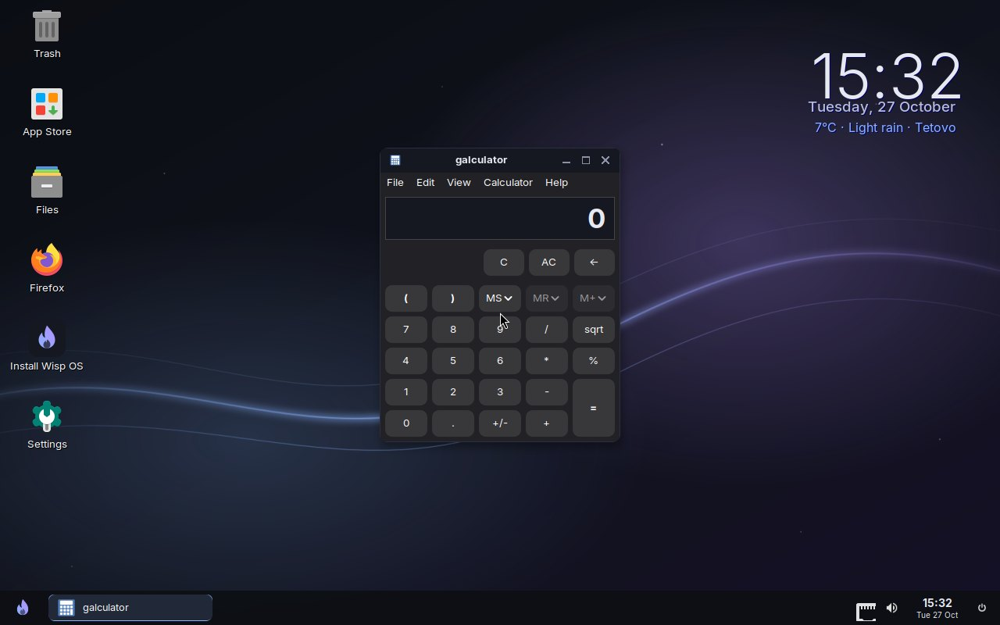
            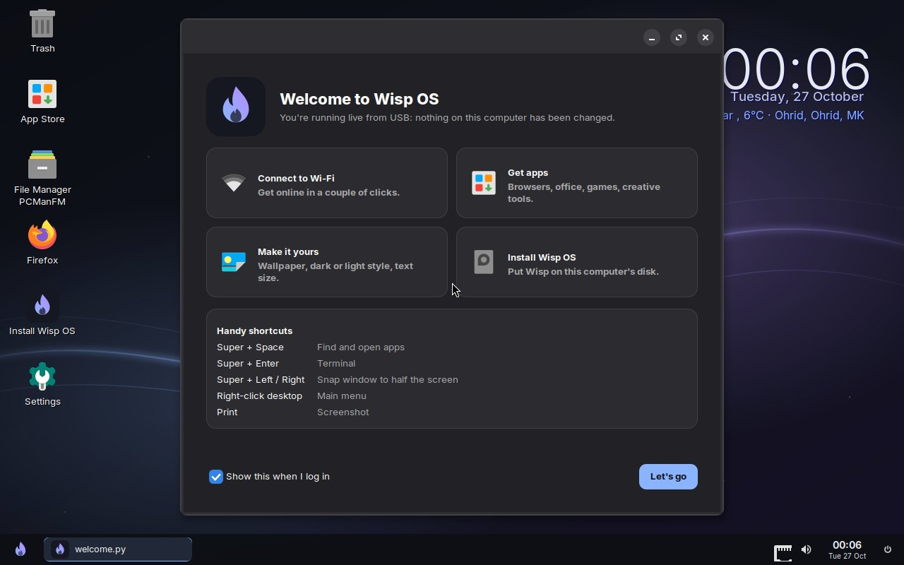
            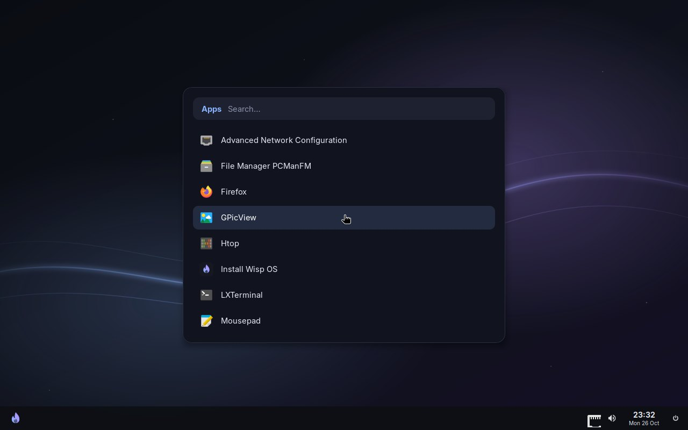
            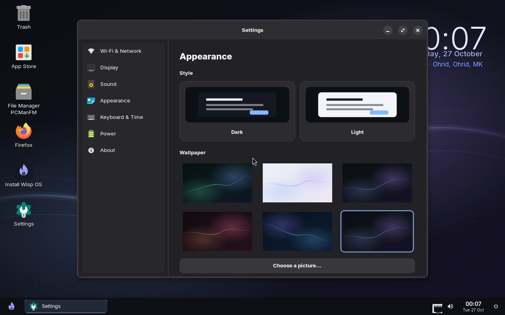
            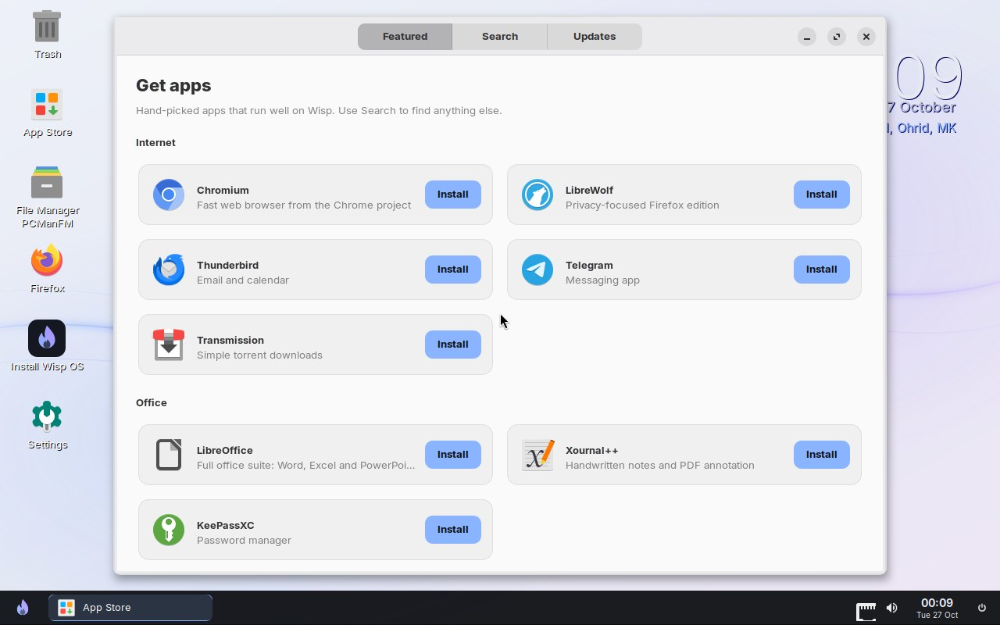
            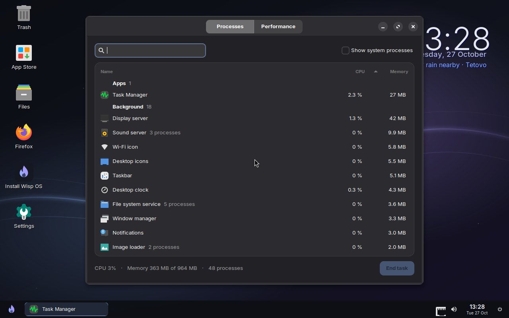
          </div></div>
          <div class="base"></div>
        </div>
        <div class="chips" id="chips">
          <button class="chip" aria-pressed="true">Desktop</button>
          <button class="chip" aria-pressed="false">Welcome</button>
          <button class="chip" aria-pressed="false">App search</button>
          <button class="chip" aria-pressed="false">Settings</button>
          <button class="chip" aria-pressed="false">App Store</button>
          <button class="chip" aria-pressed="false">Task Manager</button>
        </div>
      </div>
    </div>
    <div class="wrap">
      <div class="stats">
        <div><b>~180 MB</b><span>at idle on a 1 GB PC</span></div>
        <div><b>1 GB</b><span>RAM is enough</span></div>
        <div><b>Free</b><span>no account, no ads</span></div>
        <div><b>BIOS + UEFI</b><span>old and new PCs</span></div>
        <div><b>Auto updates</b><span>one button</span></div>
      </div>
    </div>
  </div>

  <section id="tour">
    <div class="wrap">
      <div class="sec-head">
        <div>
          <span class="label">Tour</span>
          <h2>A closer look</h2>
          <p>Real screenshots from Wisp OS 0.1. Swipe or use the arrows.</p>
        </div>
        <div class="ctrl"><button class="arrow" data-dir="-1" aria-label="Previous screenshot"><svg viewBox="0 0 24 24"><path d="M15 18l-6-6 6-6"/></svg></button><button class="arrow" data-dir="1" aria-label="Next screenshot"><svg viewBox="0 0 24 24"><path d="M9 6l6 6-6 6"/></svg></button></div>
      </div>
      <div class="carousel big" data-carousel>
        <div class="track">
          <figure class="slide"><figcaption><b>The desktop</b><span>Apps button bottom-left, open windows along the taskbar, Wi-Fi, sound and power bottom-right. A clock with the weather sits in the corner.</span></figcaption></figure>
          <figure class="slide"><figcaption><b>Welcome</b><span>The first thing you see: connect to Wi-Fi, get apps, change the look, or install Wisp to the disk.</span></figcaption></figure>
          <figure class="slide"><figcaption><b>Find any app</b><span>Press Super + Space and type a few letters. Press Enter to open it.</span></figcaption></figure>
          <figure class="slide"><figcaption><b>App Store</b><span>Chromium, LibreOffice, Thunderbird, Telegram, GIMP, VLC and thousands more, each one click away. Updates live here too.</span></figcaption></figure>
          <figure class="slide"><figcaption><b>Settings</b><span>Fourteen pages in plain words, from Wi-Fi to default apps. Changes apply as you click.</span></figcaption></figure>
          <figure class="slide"><figcaption><b>Task Manager</b><span>See what's using memory and close stuck apps. Opens with Ctrl + Alt + Delete.</span></figcaption></figure>
          <figure class="slide">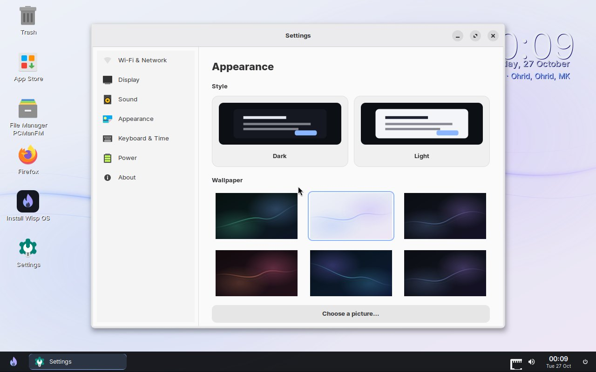<figcaption><b>Light style</b><span>Prefer it bright? One click switches every app, the window borders and the clock.</span></figcaption></figure>
          <figure class="slide">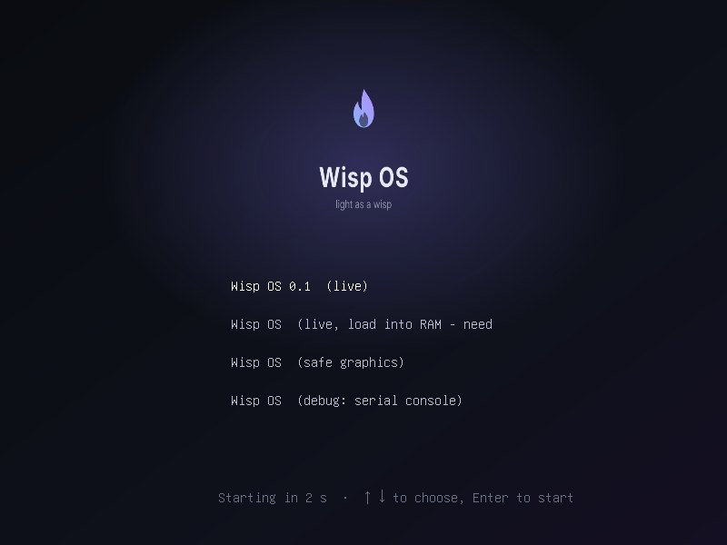<figcaption><b>Boot menu</b><span>Starts on old BIOS and new UEFI computers, with a safe graphics option for tricky hardware.</span></figcaption></figure>
        </div>
        <div class="dots" role="group" aria-label="Choose a screenshot"></div>
      </div>
    </div>
  </section>

  <section id="around" style="background:var(--panel);border-block:1px solid var(--line)">
    <div class="wrap">
      <div class="sec-head">
        <div>
          <span class="label">Using Wisp</span>
          <h2>Find your way around</h2>
          <p>If you've used Windows, you already know most of it. Click a number to see what each part does.</p>
        </div>
      </div>
      <div class="mapgrid">
        <div>
          <div class="map" id="map">
            
            <button class="pin" style="left:2.3%;top:91%" data-part="0" aria-label="1: Apps button">1</button>
            <button class="pin" style="left:12.9%;top:91%" data-part="1" aria-label="2: Open windows">2</button>
            <button class="pin" style="left:88.5%;top:91%" data-part="2" aria-label="3: Wi-Fi, sound and clock">3</button>
            <button class="pin" style="left:98%;top:91%" data-part="3" aria-label="4: Power">4</button>
            <button class="pin" style="left:9.5%;top:30%" data-part="4" aria-label="5: Desktop shortcuts">5</button>
            <button class="pin" style="left:58.6%;top:20%" data-part="5" aria-label="6: Window buttons">6</button>
            <button class="pin" style="left:79%;top:11%" data-part="6" aria-label="7: Clock and weather">7</button>
          </div>
          <p class="hint">Right-click an empty part of the desktop for a quick menu with your apps, Settings and power options.</p>
        </div>
        <ul class="parts" id="parts">
          <li><button data-part="0"><span class="n">1</span><span><b>Apps button</b><span class="t">Shows all your apps; type to search. Same as pressing <kbd>Super</kbd> + <kbd>Space</kbd> (the Windows key). Right-click it for the power menu.</span></span></button></li>
          <li><button data-part="1"><span class="n">2</span><span><b>Open windows</b><span class="t">Every open app appears here. Click to switch, or use <kbd>Alt</kbd> + <kbd>Tab</kbd>.</span></span></button></li>
          <li><button data-part="2"><span class="n">3</span><span><b>Wi-Fi, sound and clock</b><span class="t">Click the network icon to join Wi-Fi. Scroll on the speaker to change volume, click it for sound settings, right-click to mute.</span></span></button></li>
          <li><button data-part="3"><span class="n">4</span><span><b>Power</b><span class="t">Lock, sleep, restart or shut down. <kbd>Super</kbd> + <kbd>X</kbd> opens it too.</span></span></button></li>
          <li><button data-part="4"><span class="n">5</span><span><b>Desktop shortcuts</b><span class="t">Double-click to open the App Store, Files, Firefox or Settings. "Install Wisp OS" only appears while you're trying Wisp from USB.</span></span></button></li>
          <li><button data-part="5"><span class="n">6</span><span><b>Window buttons</b><span class="t">Minimise, maximise, close. Drag the title bar to move. <kbd>Super</kbd> + <kbd>←</kbd> / <kbd>→</kbd> snaps to half the screen.</span></span></button></li>
          <li><button data-part="6"><span class="n">7</span><span><b>Clock and weather</b><span class="t">Weather for your town when you're online. Turn it off in Settings → Desktop &amp; Taskbar.</span></span></button></li>
        </ul>
      </div>
    </div>
  </section>

  <section id="settings">
    <div class="wrap settings-grid">
      <div>
        <span class="label">Settings</span>
        <h2 style="margin-top:10px">Everything in one place</h2>
        <p style="color:var(--ink-2);margin-top:10px">No config files, no terminal. Pick a page:</p>
        <div class="pages" id="pages"></div>
      </div>
      <div class="carousel small" data-carousel data-pages="pages">
        <div class="track">
          <figure class="slide" data-name="Wi-Fi">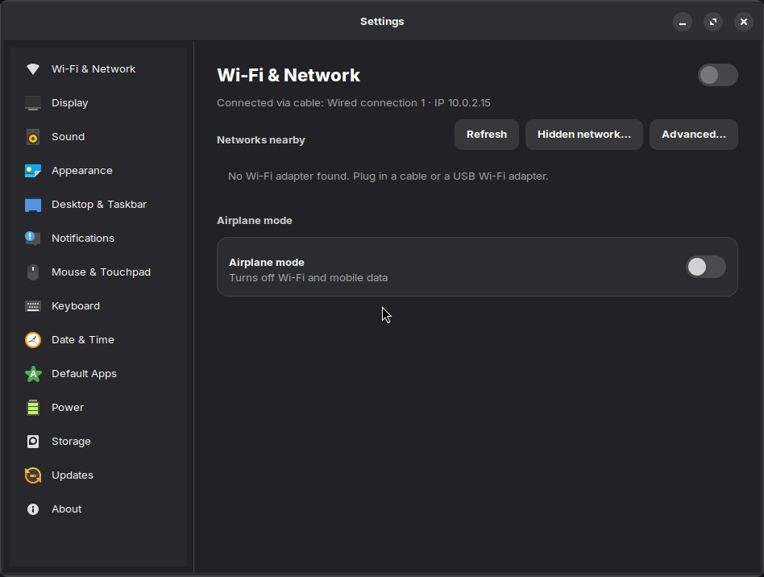<figcaption><b>Wi-Fi &amp; Network</b><span>Join networks, hidden networks, airplane mode, and your IP address.</span></figcaption></figure>
          <figure class="slide" data-name="Display">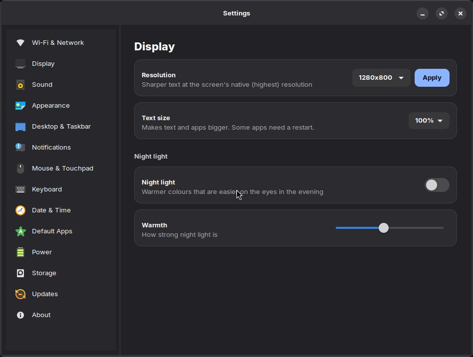<figcaption><b>Display</b><span>Resolution, text size, brightness and night light.</span></figcaption></figure>
          <figure class="slide" data-name="Sound">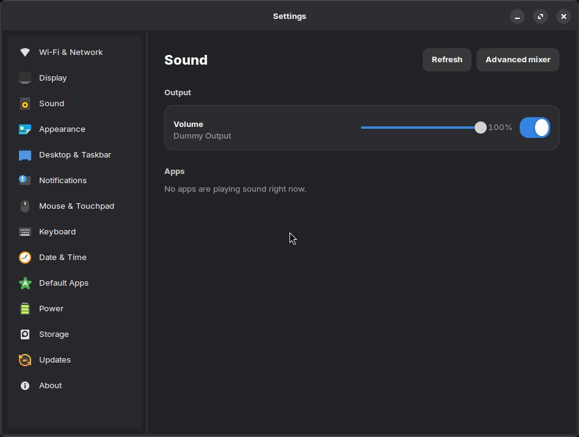<figcaption><b>Sound</b><span>Speakers or headphones, microphone, and a volume for each app.</span></figcaption></figure>
          <figure class="slide" data-name="Appearance">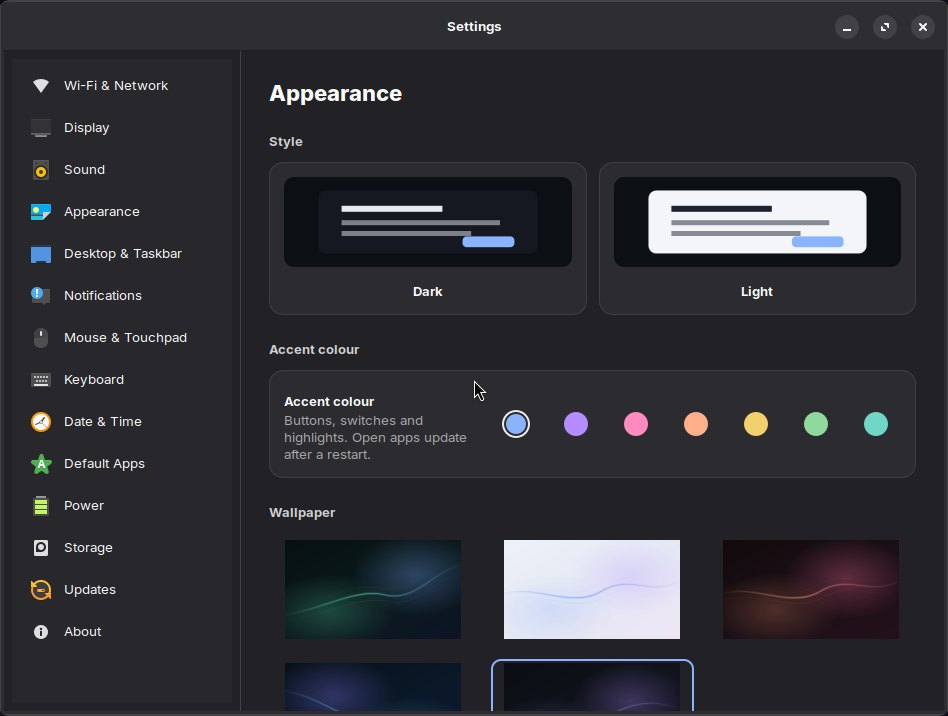<figcaption><b>Appearance</b><span>Dark or light, seven accent colours, wallpapers and pointer size.</span></figcaption></figure>
          <figure class="slide" data-name="Taskbar">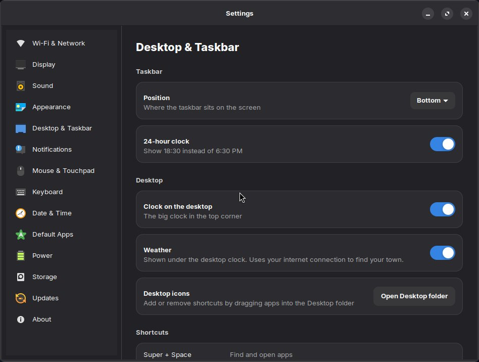<figcaption><b>Desktop &amp; Taskbar</b><span>Taskbar at the top or bottom, 12 or 24-hour clock, desktop clock and weather.</span></figcaption></figure>
          <figure class="slide" data-name="Mouse">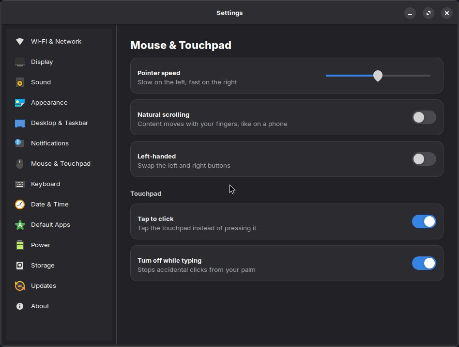<figcaption><b>Mouse &amp; Touchpad</b><span>Speed, natural scrolling, tap to click, left-handed.</span></figcaption></figure>
          <figure class="slide" data-name="Keyboard">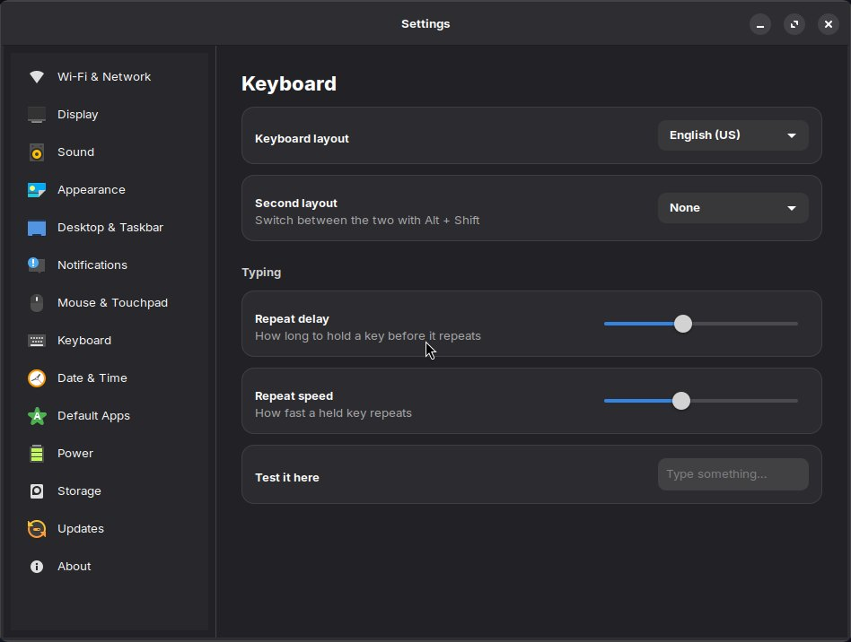<figcaption><b>Keyboard</b><span>Two layouts switched with Alt + Shift, and key repeat speed.</span></figcaption></figure>
          <figure class="slide" data-name="Date &amp; Time">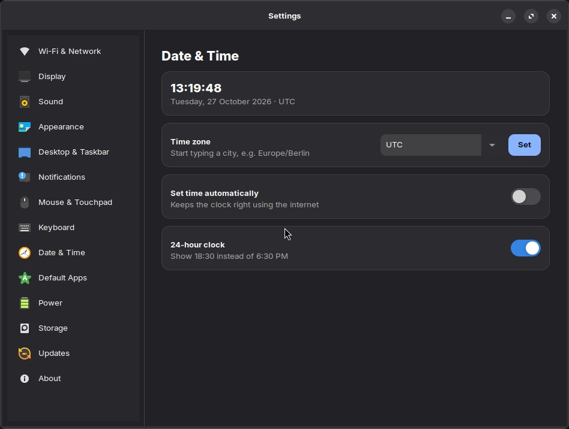<figcaption><b>Date &amp; Time</b><span>Time zone, automatic time and clock format.</span></figcaption></figure>
          <figure class="slide" data-name="Default apps">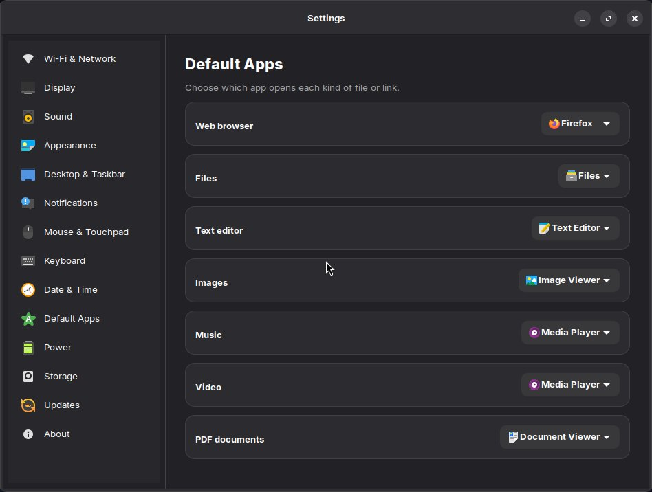<figcaption><b>Default Apps</b><span>Choose what opens web links, pictures, music, videos and PDFs.</span></figcaption></figure>
          <figure class="slide" data-name="Notifications">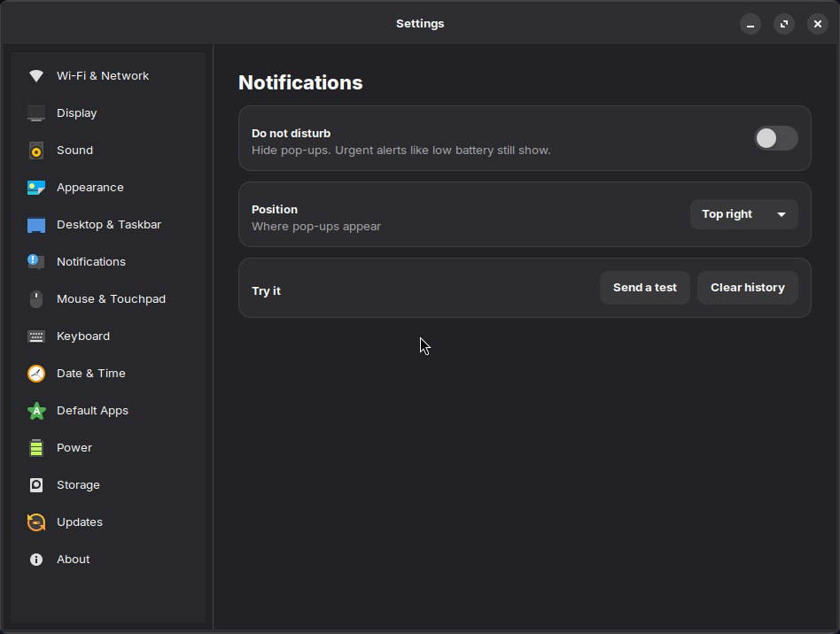<figcaption><b>Notifications</b><span>Do not disturb and where pop-ups appear.</span></figcaption></figure>
          <figure class="slide" data-name="Storage">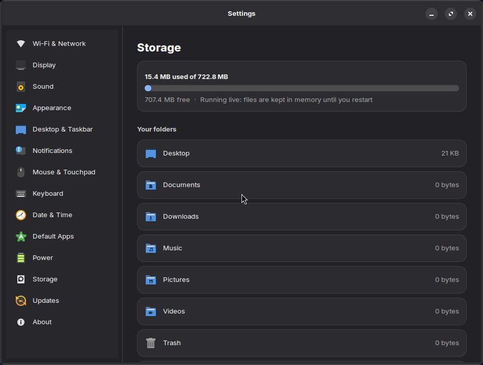<figcaption><b>Storage</b><span>What's using space, empty the trash, clear temporary files.</span></figcaption></figure>
          <figure class="slide" data-name="Updates">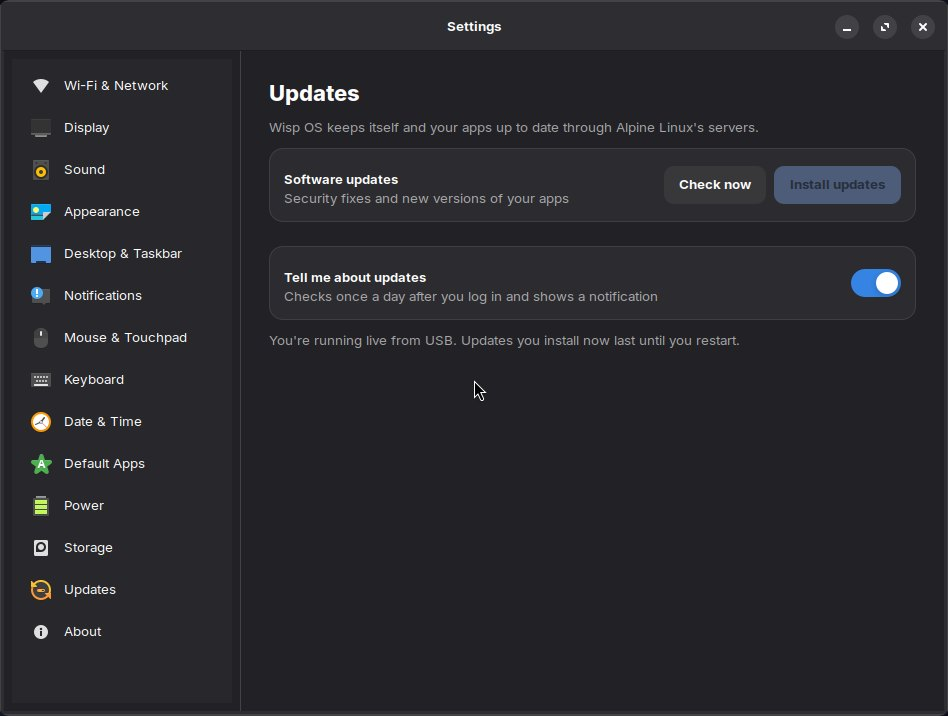<figcaption><b>Updates</b><span>Check and install updates for Wisp and every app at once.</span></figcaption></figure>
          <figure class="slide" data-name="About">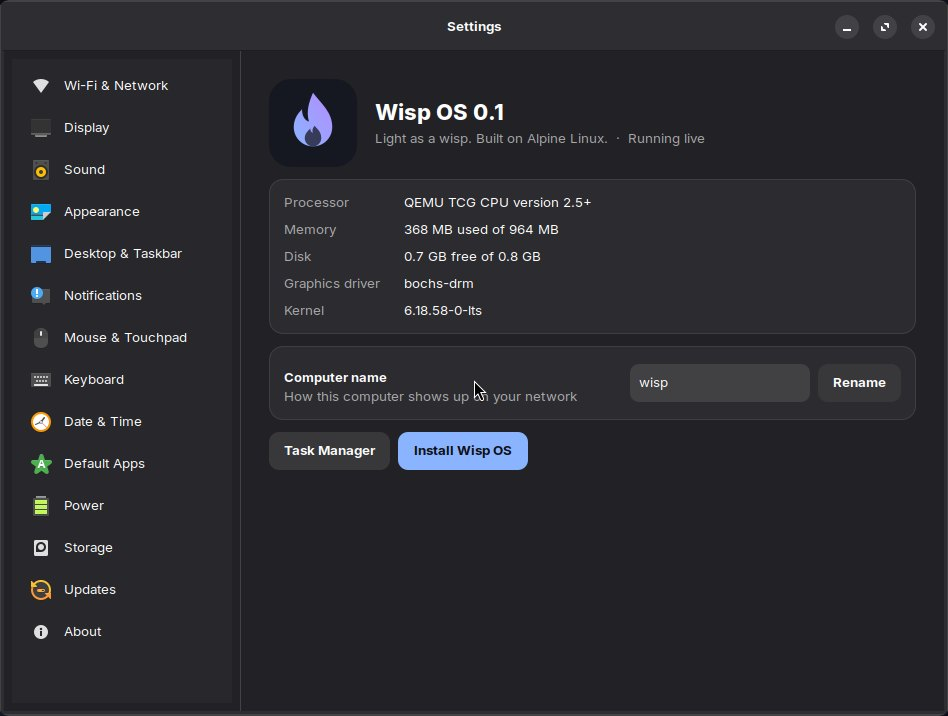<figcaption><b>About</b><span>Processor, memory, disk and the computer's name.</span></figcaption></figure>
        </div>
        <div class="dots" role="group" aria-label="Choose a settings page"></div>
      </div>
    </div>
  </section>

  <section id="fast" style="background:var(--panel);border-block:1px solid var(--line)">
    <div class="wrap">
      <div class="sec-head">
        <div>
          <span class="label">Lightweight</span>
          <h2>Built for 1 GB of memory</h2>
          <p>Wisp runs only what a desktop needs, so the browser and your apps get the rest.</p>
        </div>
      </div>
      <div class="tiles">
        <div class="tile" style="background:var(--bg)">
          <div class="big-num">178 <small>MB at idle on a 1 GB PC</small></div>
          <div class="bar" role="img" aria-label="178 of 963 MB in use"><i style="width:18.5%"></i></div>
          <ul class="rows">
            <li><span>Display and window manager</span><span>29 MB</span></li>
            <li><span>Taskbar, icons, clock</span><span>20 MB</span></li>
            <li><span>Wi-Fi, sound, services</span><span>23 MB</span></li>
            <li><span>Kernel, libraries and buffers</span><span>106 MB</span></li>
            <li><span>Free for your apps</span><span>641 MB</span></li>
          </ul>
        </div>
        <div class="tile" style="background:var(--bg)">
          <h3>Compared after start-up</h3>
          <div class="cmp">
            <div class="w"><span>Wisp OS</span><i style="width:5.9%"></i><span>178 MB</span></div>
            <div><span>Ubuntu</span><i style="width:43%"></i><span>~1.3 GB</span></div>
            <div><span>Windows 11</span><i style="width:93%"></i><span>~2.8 GB</span></div>
          </div>
          <p style="font-size:.82rem;color:var(--ink-3)">Wisp measured with <code>free -m</code> on a 1 GB PC. Others are typical figures; they vary. On a laptop with 8 GB or more, expect Wisp to show 250&ndash;350 MB: Linux gives itself bigger buffers when there is more memory, and real graphics and Wi-Fi drivers add some too.</p>
          <h3 style="margin-top:6px">Never frozen</h3>
          <p>If memory runs out, Wisp closes the biggest browser tab before the computer can lock up.</p>
        </div>
        <div class="tile" style="background:var(--bg)">
          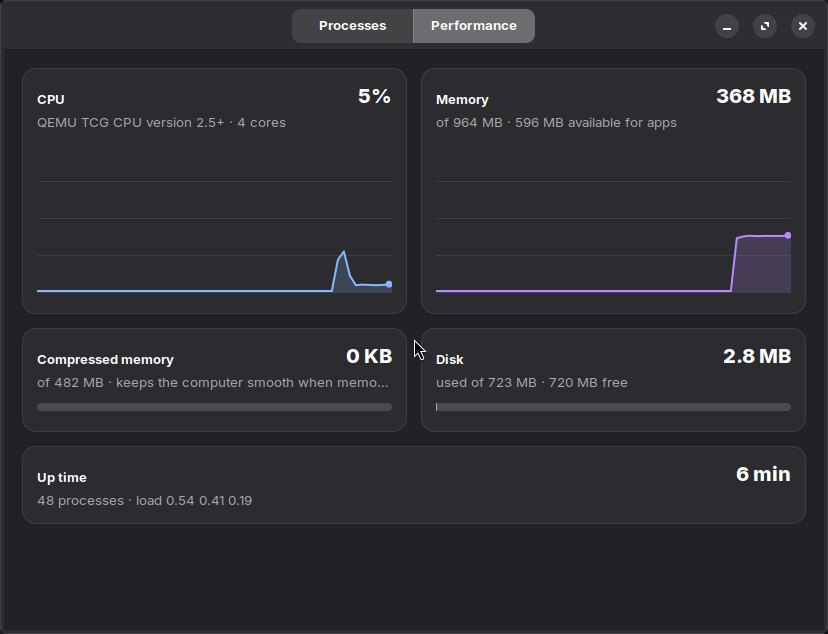
          <p>Watch it yourself in the Task Manager: live CPU and memory graphs.</p>
        </div>
        <div class="tile wide" style="background:var(--bg)">
          <h3>Apps included</h3>
          <div class="apps"><span>Firefox</span><span>Files</span><span>AbiWord (documents)</span><span>Gnumeric (spreadsheets)</span><span>PDF viewer</span><span>Media player</span><span>Image viewer</span><span>Drawing</span><span>Text editor</span><span>Calculator</span><span>Archives</span><span>Screenshot</span><span>Terminal</span><span>Task Manager</span><span>App Store</span></div>
          <p>Need more? The App Store has LibreOffice, Chromium, VLC, GIMP, Thunderbird, Telegram, games and thousands of others.</p>
        </div>
        <div class="tile" style="background:var(--bg)">
          <h3>Five wallpapers</h3>
          <div class="swatches">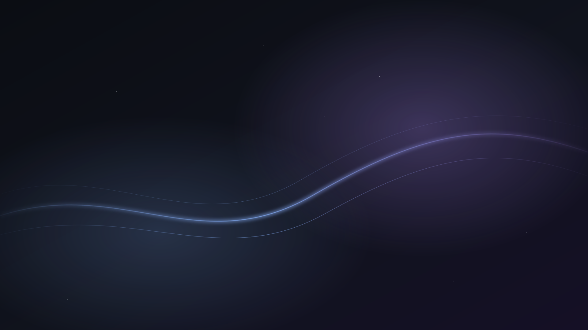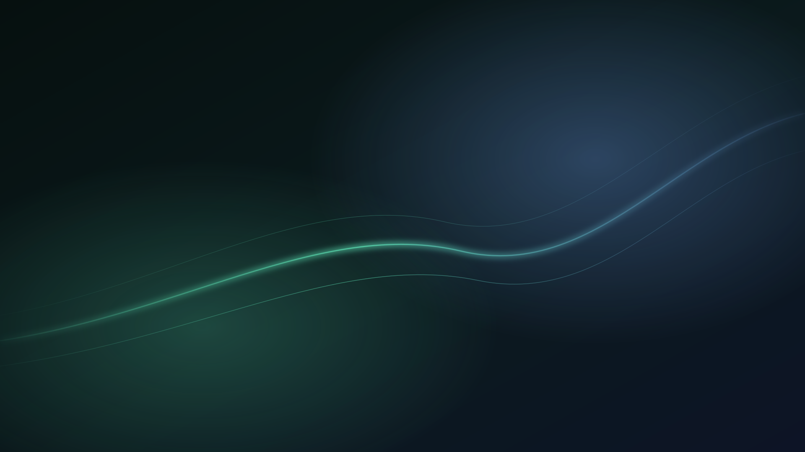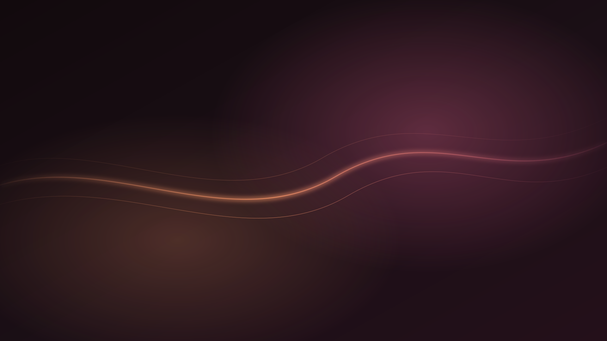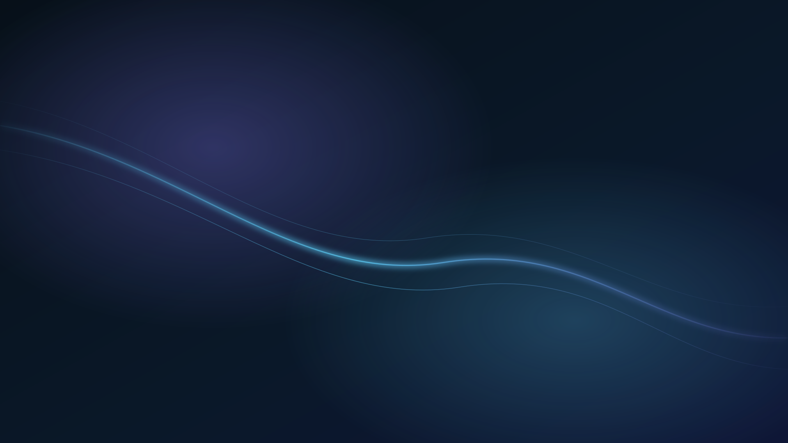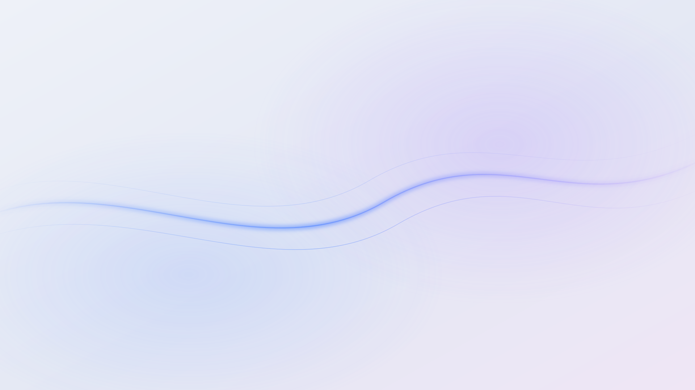</div>
          <p>Or any picture of your own.</p>
        </div>
      </div>
    </div>
  </section>

  <section id="install">
    <div class="wrap">
      <div class="sec-head">
        <div>
          <span class="label">Install</span>
          <h2>Try it first, install when you're ready</h2>
          <p>About 15 minutes from download to desktop.</p>
        </div>
      </div>
      <ol class="install-steps">
        <li><h3>Download</h3><p>Get <code>wisp-os-0.1-x86_64.iso</code> (902 MB).</p></li>
        <li><h3>Make a USB stick</h3><p>Open <a href="https://etcher.balena.io/">balenaEtcher</a> (free), pick the file and a USB stick of 2 GB or more, click Flash.</p></li>
        <li><h3>Start from USB</h3><p>Switch the PC on and press the boot menu key: <kbd>F12</kbd> on ThinkPad and Dell, <kbd>F9</kbd> on HP, <kbd>Esc</kbd> on ASUS. Choose the stick.</p></li>
        <li><h3>Try, then install</h3><p>Everything runs from the stick. When you're happy, double-click <b>Install Wisp OS</b>, pick the disk and set a password.</p></li>
      </ol>
      <div class="warn" role="note"><svg viewBox="0 0 24 24"><path d="M12 3l10 18H2L12 3z"/><path d="M12 10v5M12 18h.01"/></svg><span><b>Installing erases the disk you choose</b>, including Windows and your files. Back up first. Trying Wisp from the USB stick changes nothing.</span></div>
      <div class="getbox">
        <a class="btn btn-primary" href="https://github.com/vetonfetai/wispos/releases/download/v0.1/wisp-os-0.1-x86_64.iso">Download Wisp OS 0.1 <small>902 MB</small></a>
        <div><h3>You need</h3><ul><li>64-bit Intel or AMD PC</li><li>1 GB RAM (2 GB comfortable), 8 GB disk</li></ul></div>
        <div><h3>SHA-256 checksum</h3><div class="hash">e0c9b1328d4aae70042af8a5b045f68c0d8e8eeb682fe164911c654774837512</div></div>
      </div>
    </div>
  </section>

  <section id="faq" style="background:var(--panel);border-top:1px solid var(--line)">
    <div class="wrap two">
      <div>
        <span class="label">Shortcuts</span>
        <h2 style="margin:10px 0 18px">Handy keys</h2>
        <div class="keys">
          <div><b><kbd>Super</kbd> + <kbd>Space</kbd></b><span>Search and open apps</span></div>
          <div><b><kbd>Alt</kbd> + <kbd>Tab</kbd></b><span>Switch windows</span></div>
          <div><b><kbd>Super</kbd> + <kbd>←</kbd> <kbd>→</kbd></b><span>Snap to half the screen</span></div>
          <div><b><kbd>Super</kbd> + <kbd>↑</kbd> <kbd>↓</kbd></b><span>Maximise / minimise</span></div>
          <div><b><kbd>Super</kbd> + <kbd>B</kbd> / <kbd>E</kbd></b><span>Firefox / Files</span></div>
          <div><b><kbd>Super</kbd> + <kbd>I</kbd></b><span>Settings</span></div>
          <div><b><kbd>Super</kbd> + <kbd>L</kbd></b><span>Lock the screen</span></div>
          <div><b><kbd>Print Screen</kbd></b><span>Screenshot to Pictures</span></div>
          <div><b><kbd>Ctrl</kbd> + <kbd>Alt</kbd> + <kbd>Del</kbd></b><span>Task Manager</span></div>
        </div>
      </div>
      <div class="faq">
        <span class="label">FAQ</span>
        <h2 style="margin:10px 0 18px">Questions</h2>
        <details><summary>Is it really free?</summary><p>Yes. No price, no account, no ads. It's built on Alpine Linux and the code is on <a href="https://github.com/vetonfetai/wispos">GitHub</a>.</p></details>
        <details><summary>Will it delete Windows?</summary><p>Only if you install it. Trying it from USB changes nothing. Installing replaces everything on the chosen disk; installing next to Windows isn't supported yet.</p></details>
        <details><summary>Can I use Microsoft Office or Photoshop?</summary><p>Windows programs don't run on Wisp. LibreOffice (in the App Store) opens Word, Excel and PowerPoint files, GIMP edits photos, and Office 365 and Google Docs work in Firefox.</p></details>
        <details><summary>How do updates work?</summary><p>Wisp checks once a day and shows a notification. Open Settings → Updates and click Install updates. Wisp and all your apps update together, and your files and settings stay.</p></details>
        <details><summary>My laptop shows more than 178 MB. Why?</summary><p>178 MB is on a 1 GB PC. With more memory, Linux keeps bigger buffers for itself, and graphics and Wi-Fi drivers on real hardware use some too, so an 8 GB laptop usually shows 250&ndash;350 MB. Linux scales this down automatically on smaller PCs, so it never stops a 1 GB PC from working.</p></details>
        <details><summary>My Wi-Fi doesn't appear.</summary><p>Most Intel, Realtek, Atheros and MediaTek Wi-Fi works. Some Broadcom chips (common in older HP and Dell laptops) aren't supported yet; use a cable or a USB Wi-Fi adapter meanwhile.</p></details>
        <details><summary>Does it run on a Mac?</summary><p>Not on Apple-chip Macs (M1 and newer). To try Wisp on any computer, run it in a virtual machine.</p></details>
        <details><summary>What's coming next?</summary><p>Flathub apps like Spotify, Discord and Zoom in the App Store, a list of tested laptops, and installing next to Windows.</p></details>
      </div>
    </div>
  </section>
</main>

<footer>
  <div class="wrap">
    <a class="brand" href="#top">Wisp OS</a>
    <span>Free and open source, built on Alpine Linux.</span>
    <span class="links"><a href="https://github.com/vetonfetai/wispos">Source code</a><a href="https://github.com/vetonfetai/wispos/releases">Releases</a></span>
  </div>
</footer>

<script>
(() => {
  const reduce = matchMedia("(prefers-reduced-motion: reduce)").matches;

  // Hero laptop: cycle through screenshots, chips pick one
  const shots = [...document.querySelectorAll("#screen img")];
  const chips = [...document.querySelectorAll("#chips .chip")];
  let cur = 0, timer = null;
  const showShot = i => {
    cur = (i + shots.length) % shots.length;
    shots.forEach((s, k) => s.classList.toggle("on", k === cur));
    chips.forEach((c, k) => c.setAttribute("aria-pressed", String(k === cur)));
  };
  const play = () => { if (!reduce) { clearInterval(timer); timer = setInterval(() => showShot(cur + 1), 4500); } };
  chips.forEach((c, i) => c.addEventListener("click", () => { showShot(i); play(); }));
  const laptop = document.querySelector(".laptop");
  laptop.addEventListener("mouseenter", () => clearInterval(timer));
  laptop.addEventListener("mouseleave", play);
  play();

  // Carousels: arrows, dots, optional page buttons
  document.querySelectorAll("[data-carousel]").forEach(car => {
    const track = car.querySelector(".track");
    const slides = [...track.children];
    const dots = car.querySelector(".dots");
    const ctrl = car.closest("section").querySelector(".ctrl");
    const pageBox = car.dataset.pages && document.getElementById(car.dataset.pages);
    const go = i => {
      i = Math.max(0, Math.min(slides.length - 1, i));
      track.scrollTo({ left: slides[i].offsetLeft - track.offsetLeft, behavior: reduce ? "auto" : "smooth" });
    };
    const dotBtns = slides.map((s, i) => {
      const b = document.createElement("button");
      b.setAttribute("aria-label", "Show " + (s.dataset.name || s.querySelector("b").textContent));
      b.addEventListener("click", () => go(i));
      dots.appendChild(b);
      return b;
    });
    const pageBtns = pageBox ? slides.map((s, i) => {
      const b = document.createElement("button");
      b.textContent = s.dataset.name;
      b.addEventListener("click", () => go(i));
      pageBox.appendChild(b);
      return b;
    }) : [];
    const current = () => {
      const x = track.scrollLeft;
      let best = 0, d = Infinity;
      slides.forEach((s, i) => { const dd = Math.abs(s.offsetLeft - track.offsetLeft - x); if (dd < d) { d = dd; best = i; } });
      return best;
    };
    const sync = () => {
      const i = current();
      dotBtns.forEach((b, k) => b.setAttribute("aria-current", String(k === i)));
      pageBtns.forEach((b, k) => b.setAttribute("aria-current", String(k === i)));
      if (ctrl) {
        const [prev, next] = ctrl.querySelectorAll(".arrow");
        prev.disabled = track.scrollLeft < 4;
        next.disabled = track.scrollLeft + track.clientWidth >= track.scrollWidth - 4;
      }
    };
    let raf = 0;
    track.addEventListener("scroll", () => { cancelAnimationFrame(raf); raf = requestAnimationFrame(sync); }, { passive: true });
    if (ctrl) ctrl.querySelectorAll(".arrow").forEach(a => a.addEventListener("click", () => go(current() + Number(a.dataset.dir))));
    track.setAttribute("tabindex", "0");
    track.addEventListener("keydown", e => {
      if (e.key === "ArrowRight") { e.preventDefault(); go(current() + 1); }
      if (e.key === "ArrowLeft") { e.preventDefault(); go(current() - 1); }
    });
    sync();
  });


  // Desktop map: pins and list highlight together
  const pins = [...document.querySelectorAll("#map .pin")];
  const parts = [...document.querySelectorAll("#parts button")];
  const pick = i => {
    pins.forEach(p => p.classList.toggle("on", Number(p.dataset.part) === i));
    parts.forEach(p => p.classList.toggle("on", Number(p.dataset.part) === i));
  };
  pins.forEach(p => p.addEventListener("click", () => pick(Number(p.dataset.part))));
  parts.forEach(p => p.addEventListener("click", () => pick(Number(p.dataset.part))));
  pick(0);
})();
</script>
